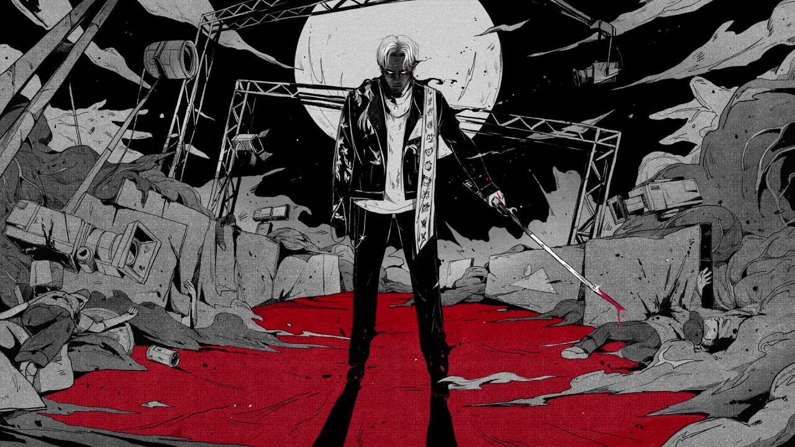

Bowz
方序中初次見到的熊仔其實是「豹子膽」（熊仔創造的角色），2018年他以入圍者之姿參加金曲獎頒獎典禮，熊仔以豹子膽身份為「台灣早就有嘻哈」聯演開場，並首度演唱〈走紅毯〉。變化兩種身份的演出型態在台灣並不多見，讓方序中感到相當驚艷，烙下深刻印象，再一次與熊仔見面就是商討專輯裝幀的時候。「熊仔本人很親切、斯文，學歷很狂，但個性並不高傲，我覺得他創造出豹子膽這個角色，有點像在釋放沒有拿出的自己。」
極致，是方序中給熊仔的第二個形容詞。經過實際溝通，他發現熊仔真心想實現並做好艱困的任務，他帶來自己喜歡的漫畫，也清楚表達腦中的各種想像。《夢想成真–豹子膽公式彩蛋設定集》共有兩百多頁，結合書套、專輯資訊、漫畫、CD、藏匿碟片的紙槽等規劃，從材質、厚度、扎實感到視覺，所有細節都精緻地追求漫畫角色設定書的呈現模式。
「有時候事情就是要做得夠極致、催到底，如果不上不下，就會變得有做跟沒做一樣。這是一本漫畫也是一張專輯，包裝以動漫次文化呈現，並加入哲學性思考，每個細節安排都富有意義，內容從網路已經發表的圖文開始整理，在音樂出版都轉向虛擬之際，熊仔又從虛擬變回實體，回歸到閱讀這件事，希望引發不同層次的思考。」
Releases